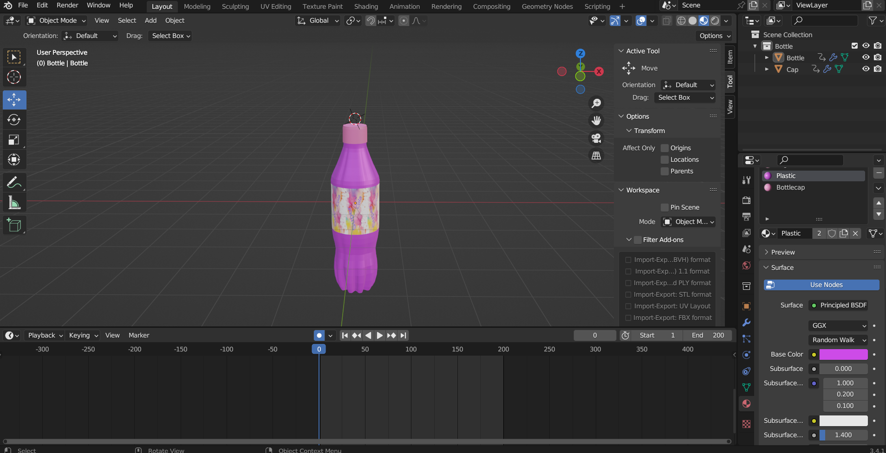

For my website, I created a marketing website for a brand called: Super Cola
The three soda containers — a bottle, can, and cup — were first created in Blender. Each model was designed from scratch, focusing on smooth topology and clean geometry to ensure good performance on the web. I used Blender's modeling tools to shape the containers and applied basic materials to define their look.
After modeling, I created simple animations for each container:
In the web app, I used the GLTFLoader from Three.js to load each model dynamically based on the current page (e.g., can.html, bottle.html, etc.). This keeps each view lightweight and focused. I added logic to swap models and play their respective animations when buttons like "Open", "Crush", or "Reset" are clicked. The animations are played using the AnimationMixer from Three.js, and transitions are smooth and responsive.
The page includes OrbitControls, allowing users to rotate and inspect the models from all angles. I also implemented buttons to trigger animations:
The responsive navigation bar and control layout were designed with accessibility across devices in mind. The navbar uses Bootstrap’s collapsible components, ensuring that it functions cleanly on both desktop and mobile screens by transforming into a dropdown menu on smaller viewports. Similarly, the control buttons are styled with flexible layouts and positioned using relative units, allowing them to adapt smoothly to various screen sizes without overlapping key content. This ensures that users on tablets, phones, or desktops can interact with the interface easily and without obstruction.
To enhance realism, I added an Ambient Light for soft shadows and even illumination. These lights help highlight the model's shapes and give a better sense of depth. I also included a Spotlight to create more focused, dramatic lighting, and provided a user interface that allows viewers to interactively adjust its properties such as distance and angle, giving them control over the scene’s mood and emphasis.
When the user triggers certain actions (like opening a bottle), corresponding sound effects are played using JavaScript's Audio API. These are short clips synced to the animations, adding an extra sensory layer to the interaction.
During testing, I gathered feedback from a few users who interacted with the webpage. They pointed out that the bottle crush animation didn’t always play correctly, which helped me identify and address a bug in the animation trigger. Additionally, several users mentioned that the bright yellow background was too intense, so I explored alternative color options to create a more comfortable viewing experience.
When testing on smaller device sizes, I also discovered that the navigation bar overlapped with the main content when expanded, prompting me to adjust the layout and improve the responsive design.